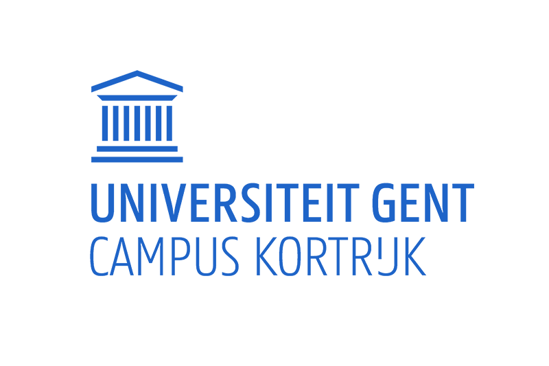
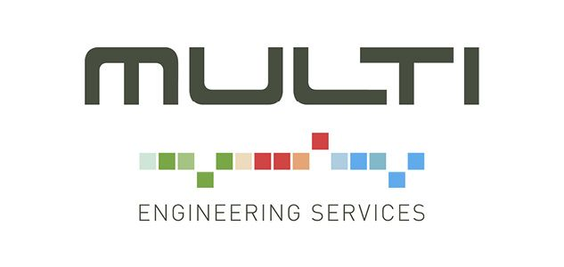

Hello Friend
Welcome to my website. Here you can find my journey through all my schools and related projects.
My hobby's are padel and cycling trough scenic routes.
And when i'm not at school you can always find me at home doing little side-projects or with friends.
EDUCATION
Secondary school 2018
T.I. Don Bosco Hoboken
Graduated in Electromechanics
The final assignment was to design and create an automated vending machine.
College 2018 - 2021
Thomas More UAS campus Sint-Kathelijne-Waver
Graduated with honors in Design and manufacturing technologies
The final assignment was to design a modular stone dumping installations for boats.
This was done at the company Multi engineering
University 2021 - 2022
KULeuven campus Sint-Kathelijne-Waver
Started a transition year in Electromechanics but didn't graduate.
University 2022 - (2025)
UGent campus Kortrijk
Started a transition year in Industrial Design.
EXPERIENCES
Winter school 2020
Polytech University St. Petersburg
This was an extra course about concept designing and modeling.
We were challenged to make a concept from sketch in two weeks.
Winner of the Kamp C 3D Print Awards 2020
Zitboog
The "Zitboog" is a bench for public places.
It was designed to be manufactured on a concrete 3D- printer at Kamp C.
The client is able to choose wich parts of the bench they need for their applications.
This makes the bench adaptable and modular.
Internship and final assignment college 2021
MULTI Engineering
I was an intern at MULTI Engineering for 4 moths in the maritime departement.
My assignment was to design a modular system for a stone dumping installation.
This is used to dump stones in undeep waters to reinforce dikes and cover up underwater.